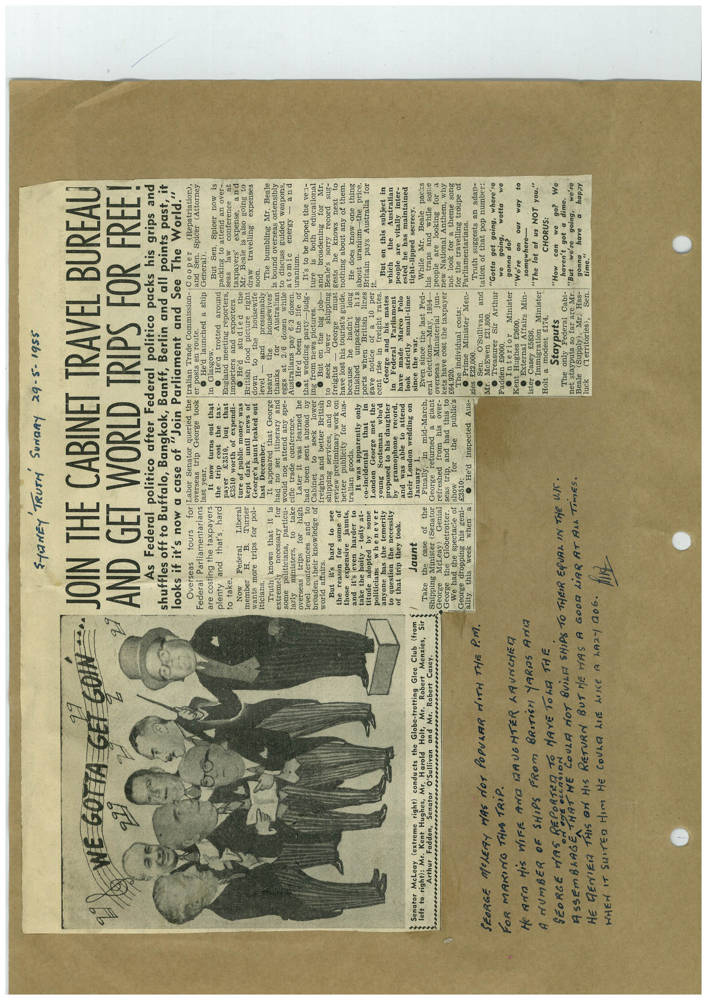

Book 1 · scan 039


Description
Transcription
Context
Review notes
Compare the machine draft with the scan. Handwriting and names need human review.
Artifacts
Edit the artifacts field in this note’s frontmatter to change these records. This summary is generated.
B01-S039-A01 — Newspaper clipping & Handwritten note — Book 1, scan 039
Types: Newspaper clipping, Handwritten note
Scope: Whole scanned page; individual items can be split out during review.
Caption: Not mapped yet.
Caption source: Not recorded yet.
Caption status: unmapped
Machine transcription
SHANEY TRUTH SUNDAY 29-5-1955 WE GOTTA GET GONN Senator McLeay (extreme right) conducts the Globe-trotting Glee Club (from left to right): Mr. Kent Hughes, Mr. Harold Holt, Robert Menzies, Arthur Fadden, Senator O'Sullivan and Mr. Robert Casey. ............. SEORGE MOLEY WAS dOT POPULAR MITH THE PM. FOR MAKING THIS TRiP. He AND HiS WIFE AND DAUGHTER ARUNCHED A NUMBER OF SHIPS FROM BRITiSH YARDS ANIZ JOIN THE CABINET TRAVEL BUREAU AND GET WORLD TRIPS FOR FREE! As Federal politico after Federal politico packs his grips and Shoks it ifs told case of Join Part, ment and See phe world. for Labor Senator queried the tralian Trade Commission- Cooper (Repatriation.), Federal Parliamentarians last year. overseas trip George took er posts en route. and Sen. Spicer (Attorney He'd launched a ship General. are costing the taxpayers and that's hard He'a trotted around But Sen. Spicer now is England meeting reporters, seas packing to attend an over- conference at ture of public money was The tar: Beale is expense and wants more trips for pol- British food picture right draw also going to expenses George's jaunt leaked out Truth knows that it is and presumably It appeared that George heard the housewives' The bumbling Mr. Beale extremely necessary had no set itinerary and thanks Australian is bound overseas ostensibly come politicians. to discuss guided weapons, atomic larly ministers, particu- would not attend any spe- take cific trade conference. eggs at Australians pay 6/3 dozen. energy - and Trios for high Later it was learned he • He'd been the life of uranium. level conferences and to had been sent abroad by broaden their knowledge of Cabinet It's to be hoped the ven- to educational world affairs. freights and better But it's hard to see shipping services, and the reason for some of review preliminary work on shipping Beale's sorry record sug- knows next those expensive jaunts, better publicity and it's even harder to tralian goods. have lost his tourist's guide, nothing about any of them. He does know one thing ake the hoity, toity at- It was apparently only about uranium-the price. titude adopted by some co-incidental politicians whenever London George met the Britain pays Australia for anyone has the temerity young Scotsman to question the necessity of that trin they took. proposed to his daughter But on this subject in which the Australian gramophone George and his mates in Redlera Parliament oni une able to attand Jaunt their London wedding on have made Marco Polo look strictly small-time people vita January 1. since the war. tight-lipped secrecy. Take the case of the Shipping Minister (Senator Finally, in mid-March, Even since the last Fed- While Mr. Beale packs George returned a giant eral elections May, 1954 his traps and while some George George McLeay) Genial the Globetrotter. refreshed from his over- overseas Ministerial people are looking for a seas trip, and had this to kets have cost the taxpayer new National Anthem, why We had the spectacle of 664,920. not look for a theme song George dropping his geni- £3510: the publie's week when He'd inspected Aus- The imme int costs en- for tan trains. for the travelling troupe of zies £22,000. Truth suggests an adap- • Sen. O'Sullivan and tation of that pop number: Mr. McEwen €21,800. • Treasurer Sir Arthur Fadden £9000. "Gotta get going, where're going, wotta • Interior Minister gonna do? Kent Hughes £2600. "We're • External Affairs Min- on our way to somewhere— ister Casey £5836. • Immigration Minister "The lot of us NOT you." Holt a modest $174. CHORUS: Stayputs The only Federal Cabi- "How can we go? We GODD LiAR AT ALL TimES. net stayputs so far are Mr. haven't got a dime. "But we're we re Beale luck (Supply), Mr. Has- gonna (Territories), Sen. time." HE DENIER THIS ON HIS RETURN BUT ME HAS A WHEN IT SUITED HIM ME COULD LIE LIKE A LA2- A0G.